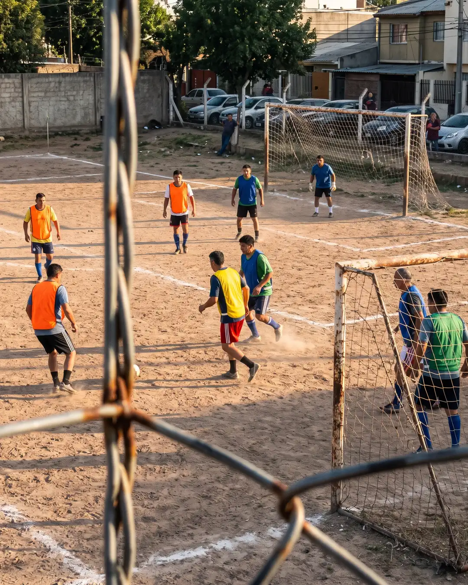
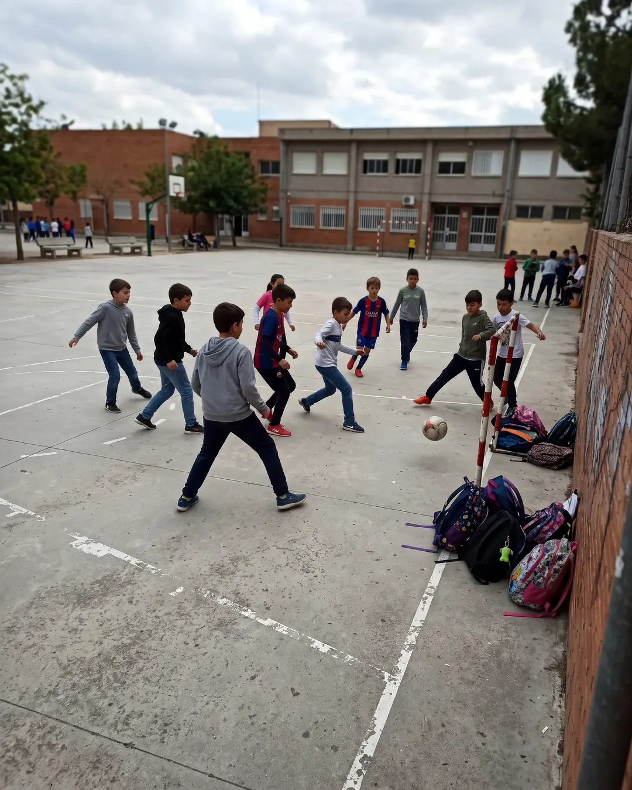

Case #14 · Soccer
About this case
Case #14 is closed. It was the daily case for November 14, 2026 and its theme was Soccer. The detectives of that day had two challenges: five images to judge as real photographs or AI-made pictures, and five one-sentence claims to judge as facts or fakes.
- AI-generated images: 3 of 5
- Fake claims: 2 of 5
Below you will find every answer. Each AI-generated image comes with the prompt that produced it, and each claim with the truth behind it and the details worth remembering, so you can check what you missed.
One of the fakes: “In a 2025 Conference League match, the VAR broke down because of a seagull.” The truth: There is no record of a seagull breaking the VAR in a Conference League match.
Want to sharpen your eye? Read our guide to spotting AI images or our guide to spotting fake news, then play today's case.
Images
-
Image 1
REAL
Real photograph
-
Image 2

REAL
Real photograph
-
Image 3

AI
The suspect's confession
Amateur soccer match on a neighborhood dirt field, seen from behind the chain-link fence, with players in colored bibs and somewhat rusty goals; afternoon light.
-
Image 4

AI
The suspect's confession
Kids playing a match on a concrete school court, with backpacks piled up as a goalpost and the ball in the air; crooked framing.
-
Image 5

AI
The suspect's confession
A group of friends watching a match on a bar TV, photo from behind with the screen in the background, glasses on the counter and people gesturing; unreadable scoreboard and warm light.
Fact or Fake
-
Claim 1
FAKE “In a 2025 Conference League match, the VAR broke down because of a seagull.”
There is no record of a seagull breaking the VAR in a Conference League match.
- In Turkey, an amateur player gave CPR to a seagull hit by a ball.
-
Claim 2
FAKE “In Italy's Serie C, a player was transferred in exchange for 2,000 plastic seats.”
There is no record of such a transfer in Serie C or in Italian professional soccer.
- There were odd payments: Ángel Di María for 30 balls early in his career.
- Ion Radu was transferred for two metric tons (4,400 lb) of meat.
-
Claim 3
FACT “In the longest penalty shootout in history, 56 penalties were taken.”
In May 2024, in Israel, SC Dimona beat Shimshon Tel Aviv 23-22 after 56 penalties.
- It was the semifinal of the promotion playoff to the Israeli third division.
-
Claim 4
FACT “Norway is the only national team that has never lost to Brazil in an official match.”
Norway holds an unbeaten record against Brazil: two draws and two wins in four matches.
- They include the 1998 World Cup and several friendlies.
-
Claim 5
FACT “The match with the most goals in history ended 149 to 0.”
On October 31, 2002, in the Madagascar league, AS Adema beat SO l'Emyrne 149-0.
- SO l'Emyrne's players scored every goal into their own net on purpose.
- It was a protest against the refereeing of an earlier match.